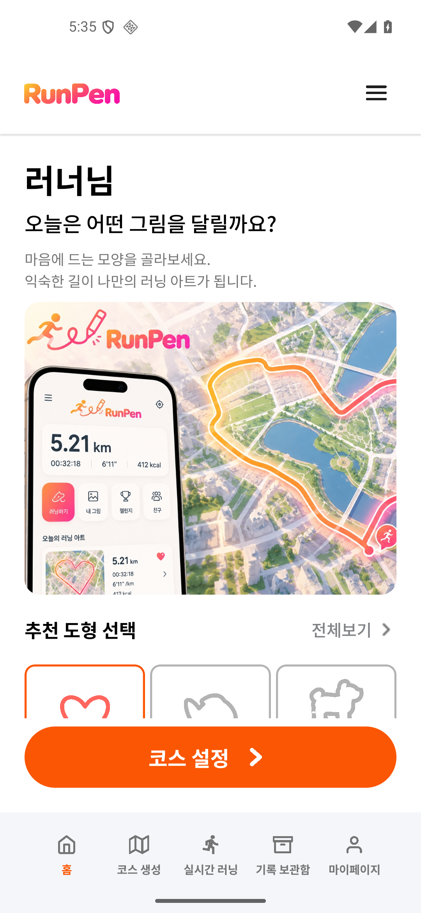
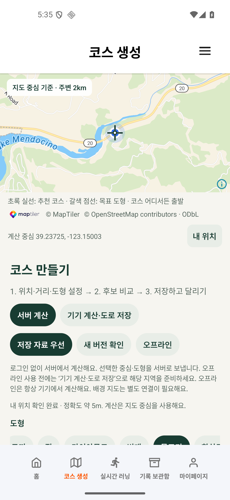
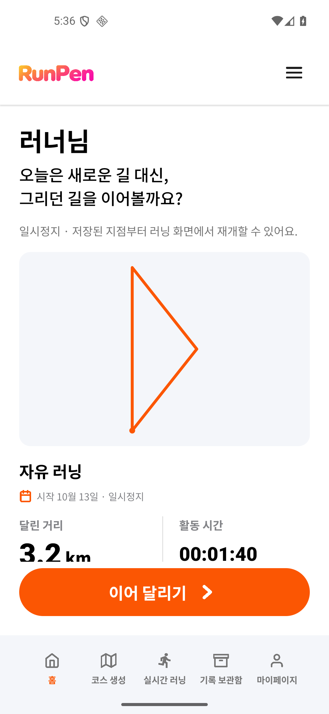
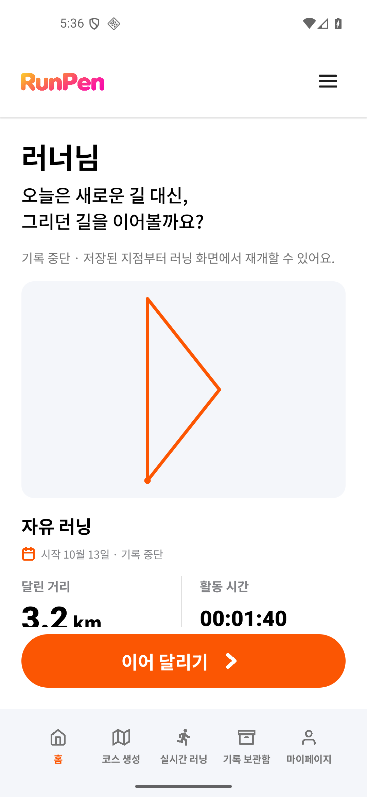
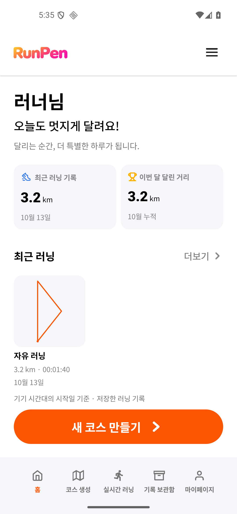
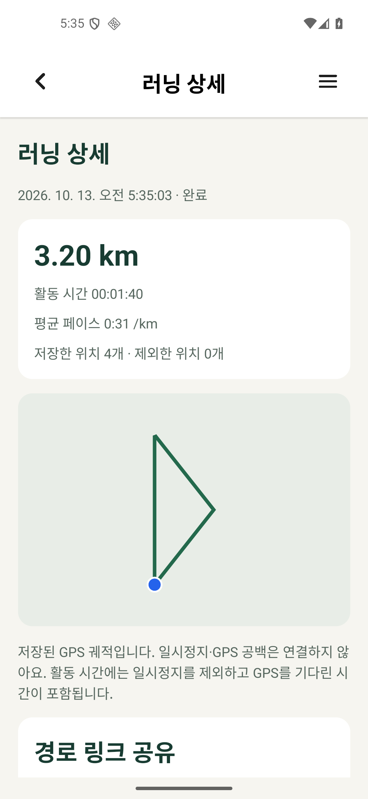
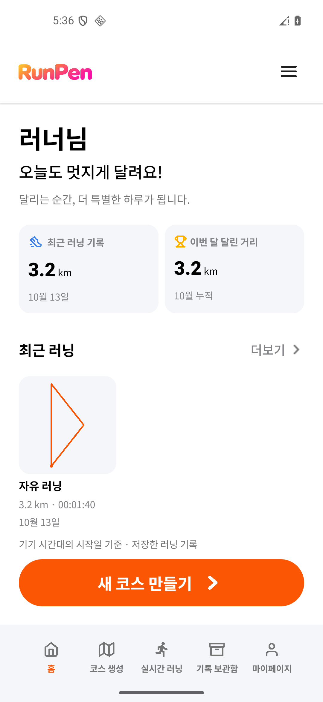
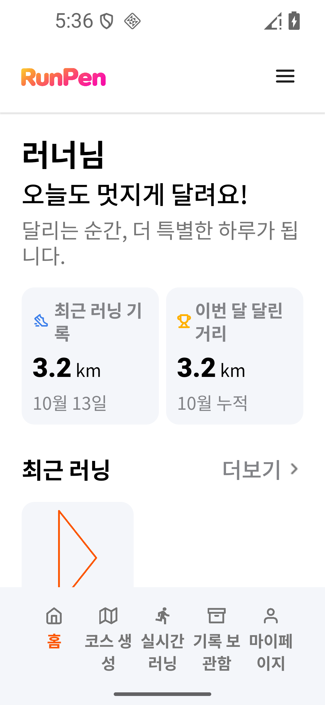

초기 홈
기록이 없는 계정의 도형 선택·코스 설정. 아래 항목은 스크롤로 접근합니다.

물고기 선택 전달
홈에서 고른 도형을 기존 코스 생성 화면에 한 번 전달합니다.

일시정지 홈
실제 기록의 경로·거리·활동 시간과 명시적 이어 달리기 버튼입니다.

중단 홈
중단 기록을 유지하고 러닝 화면에서 재개하도록 안내합니다.

기록 홈
실제 종료 기록의 최근/월간 거리와 좌표 미리보기입니다.

기록 상세
홈 카드에서 같은 기록의 상세로 이동합니다.

오프라인
통신을 끈 뒤에도 저장 기록과 경로를 표시합니다.

큰 글씨
360dp·글씨 1.6배에서 줄바꿈과 내용 스크롤을 확인합니다.
